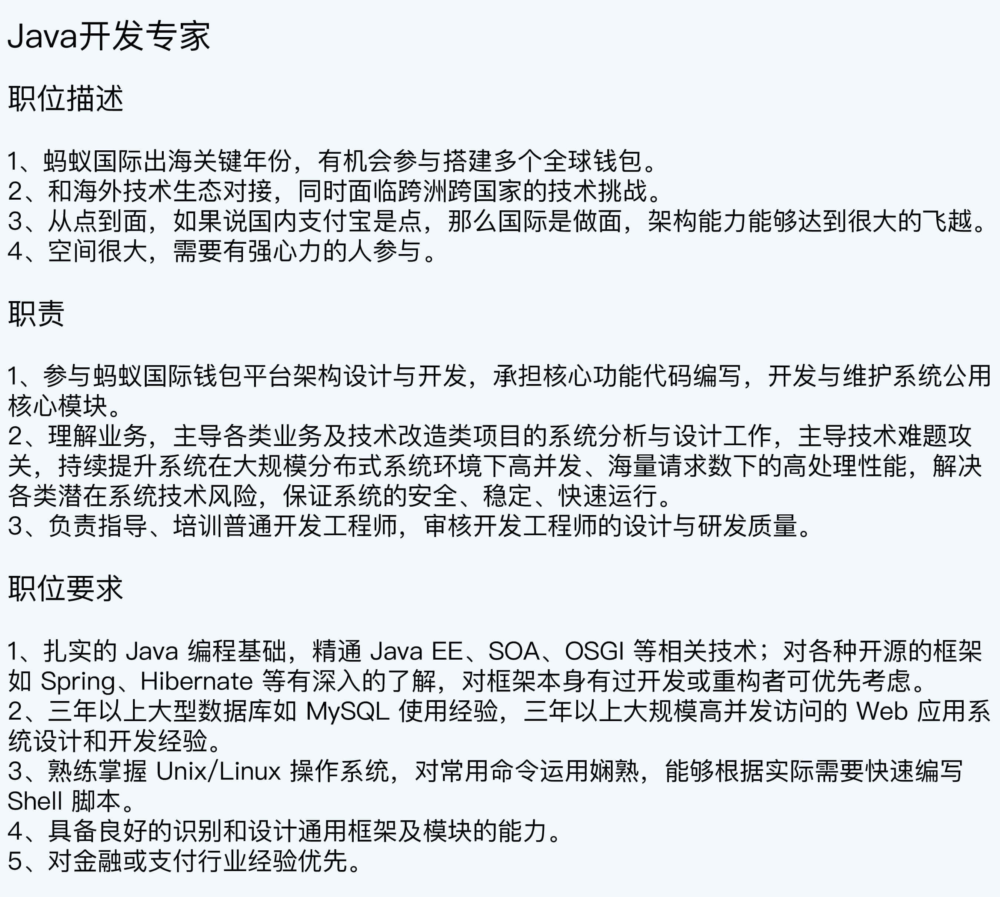
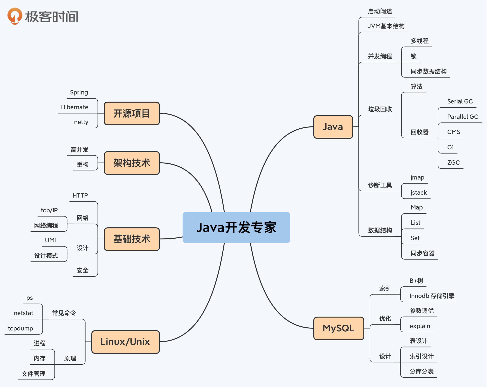
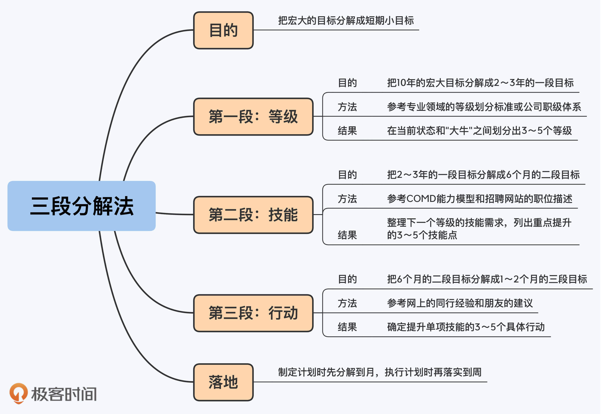

18 | 三段分解法：怎么利用10000小时成为大牛？
你好，我是华仔。
10000小时定律虽然理论上很简单，但真正要落地实行也并不那么容易。上一讲我介绍了怎么通过海绵学习法来获取你的10000个小时，但是就算有了时间，你也很难十年如一日地坚持学习。
能否坚持，当然要看你对自己的事业是否有“激情”。但如果只靠激情来支撑，持续10年依然是一个很大的挑战。因为我们的大脑在进化的过程中，已经形成了需要不断的正反馈才能保持兴奋的机制，也就是说，与其在第10年给一个大奖励，还不如每个月都给一个小奖励。所以除了激情，你还需要“先定一个能达到的小目标”。
那么，具体要怎么制定小目标呢？这一讲，我就为你介绍一个三段分解法，带你把“10年成为大牛”这个大目标，分解成一个个可以在短期内达成的小目标。
第一段：分解“等级”
第一段分解，是在当前状态和最终的目标状态之间，分解出中间的等级。
10年成为大牛这个目标虽然比较长远比较宏大，但并不意味着在成为大牛之前，我们一直停留在菜鸟阶段原地踏步。在菜鸟和大牛之间，其实有几个关键的里程碑，这些里程碑就是中间的等级。
大部分的专业领域都有比较正式的等级划分标准，例如钢琴专业从1级到10级，跆拳道从白带到黑带。对于互联网的领域来说，虽然没有通用的专业等级标准，但不同的公司都会有类似的职级体系，你可以直接以公司的职级体系来划分中间等级。
以跨越式职级为例，从P5到P9，你经历的等级包括以下这些：
- P5，职场新手，工作1～3年，需要别人带你完成任务。
- P6，项目能手，工作3～5年，能够独立完成任务。
- P7，团队专家，工作4～8年，能够带领小团队实现目标。
- P8，领域专家，工作8年以上，能够带领多个团队实现目标。
- P9，业务导演，工作10年以上，能够导演成熟落地的作品。
我们可以看到，虽然说至少10年才可能成为P9这个级别的大牛，但是你3年就可以达到P6，5年就可能达到P7，8年就可能达到P8，在这个过程中，你一直在成长和提升，早就不是当初的菜鸟了。如果对你来说，不是非得赚它一个亿才算小目标，那么你已经可以活得比较滋润了。
分解出中间的各个等级之后，我们核对一下自己目前所处的位置，然后瞄准下一个最近的等级，继续第二段的分解。
第二段：分解“技能”
虽然朝下一个等级努力的时间是2～3年，跟10年比起来已经缩短了不少，但是这个时间还是比较长的。为了更好地利用这2～3年时间，我们需要进一步分解。
第二段分解的目标就不是等级了，而是技能，也就是为了达到下一个等级的要求，你需要针对哪些技能做专项提升。
如果你所在的公司已经有成熟的职级体系，你可以参考第5讲的COMD能力模型，整理出当前级别和下一级别的能力要求矩阵，这样就可以一目了然地看出具体的能力差距项有哪些了。
如果你所在的公司目前没有成熟的职级体系，或者你准备跳槽到某个心仪的公司，你也可以采取一个取巧的方式来明确能力项差别，这就是直接查看公司的招聘要求。
以阿里巴巴招聘网站上的“Java开发专家”这个职位为例，招聘要求如下：

可以看到，“Java开发专家”（对标阿里P7）要求的技能包括Java、Spring、SOA、MySQL、Hibernate和Linux/Unix等。多查看一些类似的职位描述（不同公司、不同业务线），你就能获得“Java开发专家”的大概要求的技能范围。
但实际上，真实的技能要求会比职位描述更加细致，比如“熟练掌握Java编程技术”到底意味着什么，职位描述是不会写得特别清楚。我个人的习惯是将这些要求整理为一个思维导图，详细列出每个技术点。

注意，这张图只是一个示例，并不是说所有Java开发专家都一定是这个要求，比如互联网行业和电信行业的要求就不一样，你需要根据自己的行业和技术方向整理出适合自己的思维导图。
有了这样一个思维导图后，我们就可以开始真正进行第二段分解了。分解的方法很简单，哪里不懂补哪里！比如你感觉自己现在的数据库水平很一般，只会写CRUD语句，其他的东西都不懂，那么你就专攻数据库这一部分，通过一段时间的专项提升来拿下这个技能。
专项提升某个技能的持续时间既不能太短，也不能太长，一般建议在6个月左右。
时间太短，容易陷入为了“完成任务”而去学的误区，没有真正得到有效提升。例如我曾指导一个下属学习MySQL，结果他就看了几个PPT就说自己学完了，其实还远远没有熟练掌握MySQL相关技能。
时间太长的话，其他技能就来不及提升了，要是你2年时间都用来提升数据库，那操作系统怎么办？网络怎么办？所以6个月为一个周期，基本上刚刚好。
举个例子，如果你目前岗位是Java后端开发，级别是P5，如果晋升到P6需要掌握数据库、Linux操作系统、网络编程的技术，最终的二段目标分解如下：
- 2021.01～2021.06：提升数据库水平
- 2021.01～2021.06：提升Linux水平
- 2021.06～2021.12：提升网络和网络编程水平
当然，二段目标的提升顺序并不是一成不变的，很多时候你还需要根据工作内容进行调整。比如主管最近正好安排你来负责优化系统性能，降低机器负载，那么你完全可以把“提升Linux水平”挪到“提升数据库水平”之前。
第三段：分解“行动”
第二段分解之后，我们得到了6个月左右的技能提升目标，接下来要做的，就是通过第三段分解，将技能提升目标分解为具体要做的事情，然后按照计划执行。
比如说你的二段目标是“提升Linux水平”。那么，怎样才能提升呢？你可以上网搜索（知乎是个好地方），也可以去问有经验的朋友，把二段目标细化为1～2个月的三段目标。
以我刚加入UC的情况为例，之前我在华为的时候，是在Windows平台上用VC6进行开发，而到了UC之后，是在Linux平台上用C++开发。所以我当时就确定了“提升Linux水平”这个目标，然后通过上网查、找别人问等方法，最终将这个目标分解为4个行动：
- 1.5个月：通读《UNIX环境高级编程》
- 1.5个月：通读《Linux系统编程》
- 2个月：通读《UNIX网络编程 卷1》
- 1个月：Linux常用命令实战，包括tcpdump、ps和top等
把6个月的技能提升目标进一步分解成1～2个月的具体行动目标之后，实施起来就简单多了。我每1～2个月只需要专注做好一件事，每次完成后都很有成就感，既感觉自己的水平有了提升，又佩服自己能够坚持按计划完成任务。这样的双重激励让我更有动力去完成下一个目标。
当然，在具体落地的时候，你还需要进一步分解到周，比如下周看完某本书的哪几个章节。但是在做计划的时候，我建议你先分解到月就可以了，因为一开始就直接分解到周还是比较耗费时间的，而且如果出现计划之外的事情，调整计划本身花费的时间和精力成本也比较高。
最后，我大约花了2年的时间将Linux、网络和MySQL三个重点技能从一无所知提升到高级的水平。很多同事都问我，之前在华为是不是就是做这方面的，因为他们觉得短时间能达到这个水平是不太可能的。
小结
这一讲我跟你分享了三段分解法。虽然我举的例子都是技术领域的，但是这个方法在其他很多领域也都适用，比如说产品和运营等。
通过这个方法，你可以把宏大的目标逐步分解成可以落地的日常行动，一边“仰望星空”，朝着最终的方向前进，一边“脚踏实地”，一步一个脚印地去实现它。
现在，我们再回顾一下三段分解法的要点：
- 第一段是分解等级，参考专业领域的等级划分标准或公司的职级体系，在当前状态和大牛之间划分出3～5个中间等级，把10年的宏大目标分解成2～3年的一段目标。
- 第二段是分解技能，参考COMD能力模型和招聘网站的职位描述，整理下一个等级的技能需求，列出自己需要重点提升的3～5个技能点，把2～3年的一段目标分解成6个月左右的二段目标。
- 第三段是分解行动，参考同行在网上发布的经验和朋友的建议，确定提升单项技能的3～5个具体行动，把6个月左右的二段目标分解成1～2个月的三段目标。
- 虽然最终执行计划的时候要落实到周，但是制定计划的时候分解到月就行了，这样做的好处是，计划调整起来更加方便灵活。

思考题
这就是今天的全部内容，留一道课后思考题给你吧。以后端Java开发为例，P5/P6/P7/P8都有“Java编程技术”的相关要求，那我们为什么不在P5的时候就安排时间全部学完，彻底掌握这项技术呢？
欢迎你把答案写到留言区，和我一起讨论。相信经过深度思考的回答，也会让你对知识的理解更加深刻。